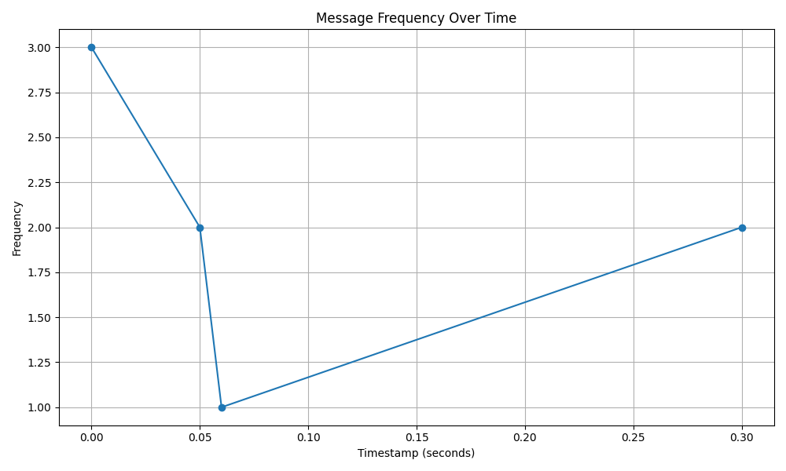
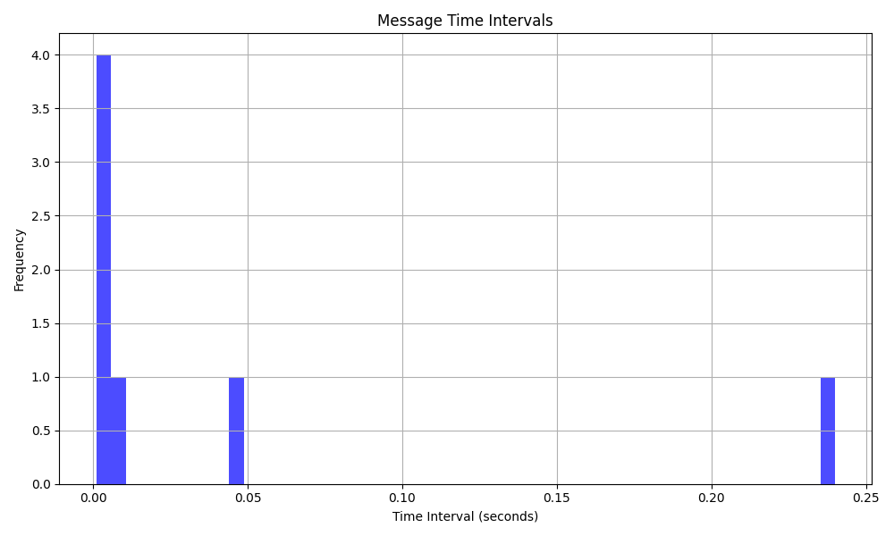

CAN Analysis Report
Diagnostics Summary:
- CAN ID 0x123 appears 4 times, which is unusually high.
- Large time gaps detected between messages, which could indicate a communication issue.
Analysis Results:
| Metric | Value |
|---|
| Total Messages | 8 |
| Unique CAN IDs | 3 |
| Average DLC | 6.125 |
Detected Anomalies:
| Timestamp | CAN_ID | DLC |
|---|
| 0.301 | 0x125 | 3 |
Time Interval Statistics:
- Min Interval: 0.001000 seconds
- Max Interval: 0.240000 seconds
- Mean Interval: 0.042857 seconds
- Std Interval: 0.088541 seconds
Data Quality Evaluation:
Total Messages: 8
Unique CAN IDs: 3
Messages with short intervals (<0.01s): 5
Messages with out-of-range DLC (>8): 0
Warning: High frequency of short intervals.
Graphs:

